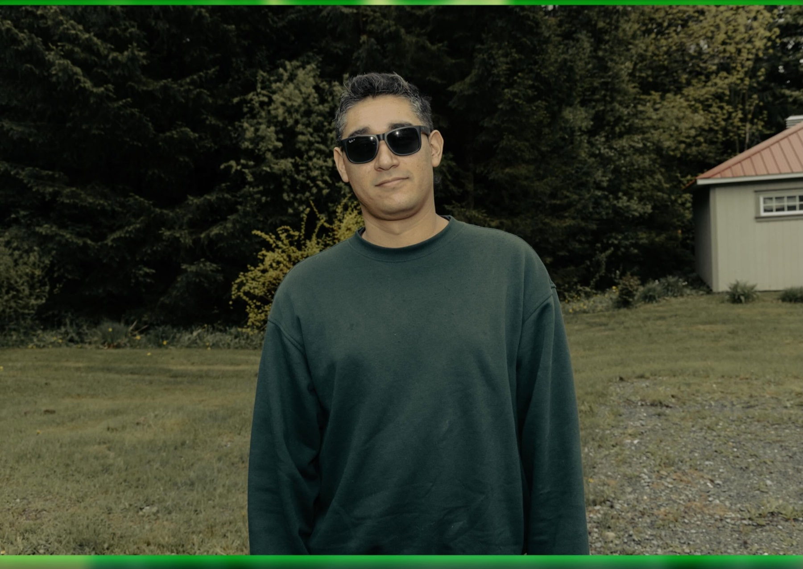
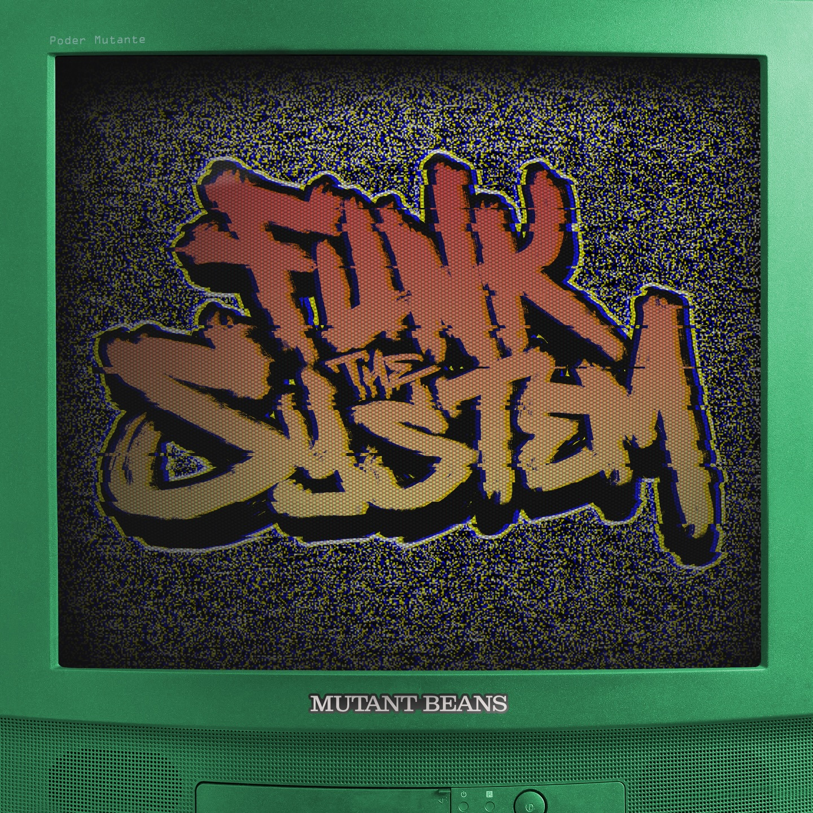
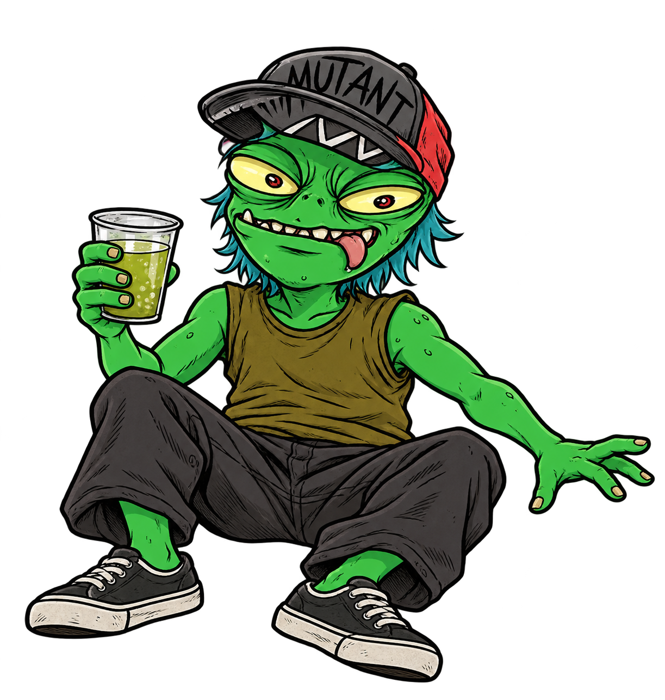
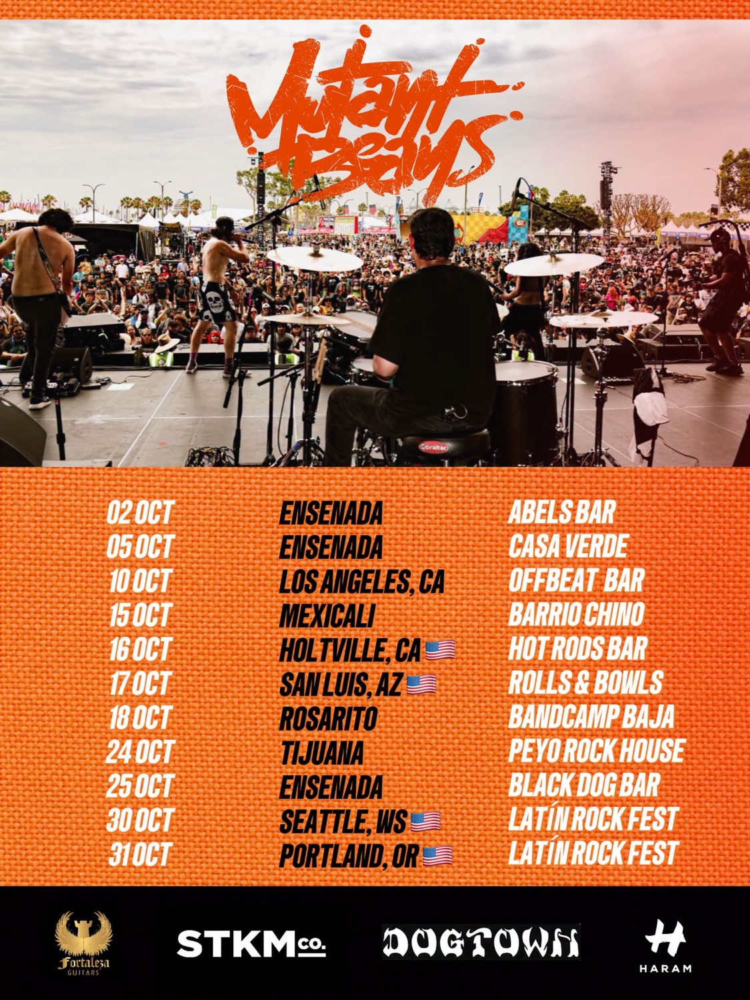
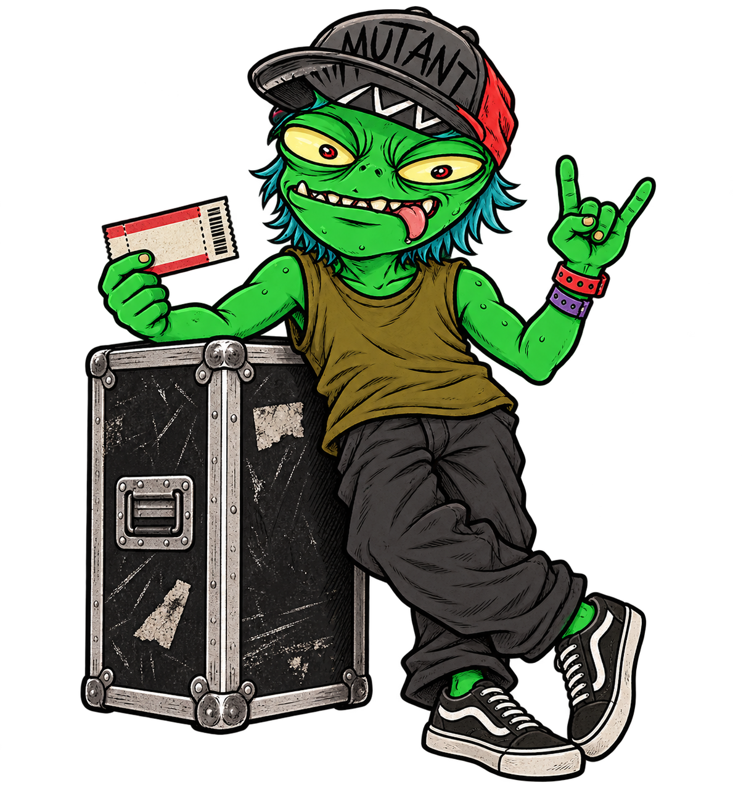
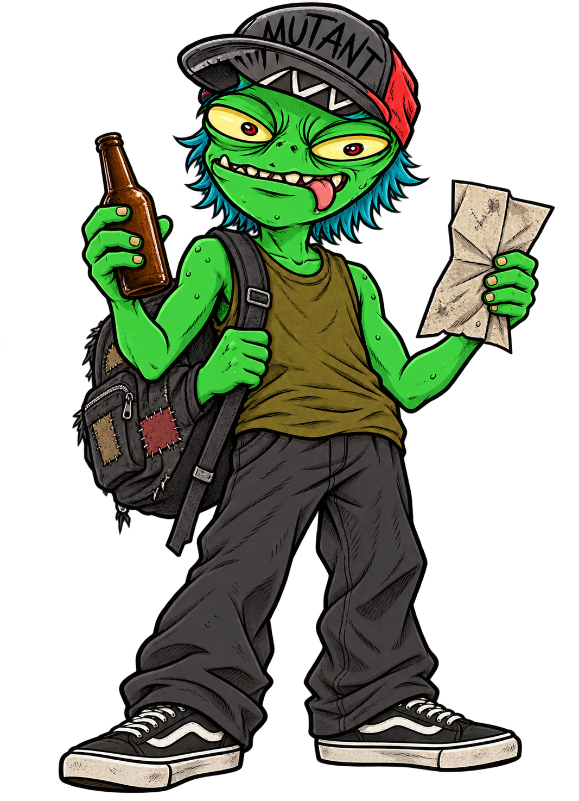
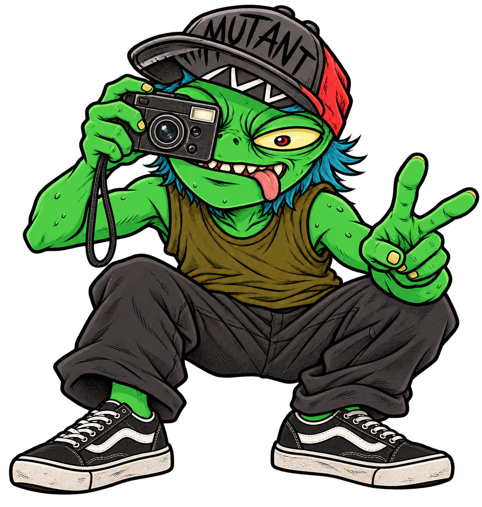

Silver
Batería

Una banda Ensenadense que mezcla funk-rock, hip-hop, thrash, punk y hardcore en un sonido propio, ruidoso y hecho para el escenario





Desde Ensenada.
Contra corriente.
Con volumen.
Formados en Ensenada en 2014, Mutant Beans cruzan el funk y el rock con hip-hop, thrash, punk y hardcore. Sus canciones miran de frente a la realidad social y política, con la energía de una banda independiente que hace las cosas a su manera.
En julio de 2026 llegaron al Vans Warped Tour en Long Beach, California tras ganar la Battle of the Bands de Ernie Ball. Esa victoria les dio su pase al festival.
Álbumes y sencillos disponibles en los canales oficiales de la banda.
Lanzamientos publicados como sencillos en Spotify.
Momentos en vivo, escenas de ruta y la energía que rodea a Mutant Beans.
Desliza o usa las flechas para recorrer las fotos. Toca una imagen para verla en grande.

Sigue las publicaciones, fechas y comunicados directamente en las redes de la banda.